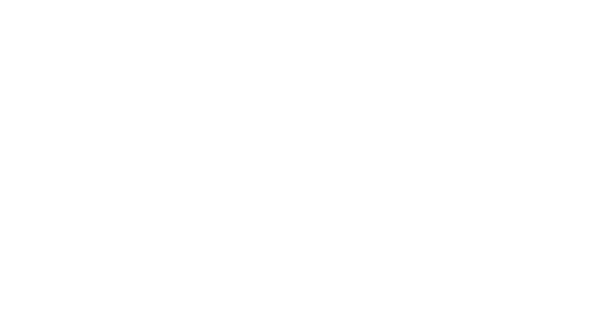
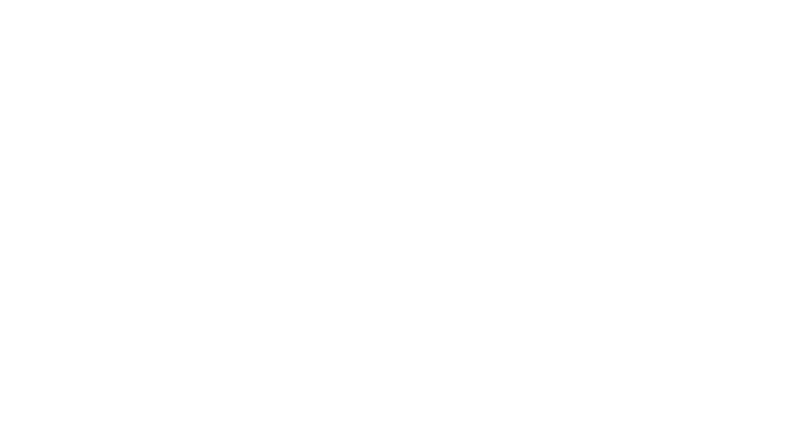

The Green simulates the eating and growing process of the living things, and also shows how they react when light level is too low.
Green
 


The Blue simluates a fungus type living thing that reacts dynamically to light and also shows how light interact with mutiple objects.
Blue


The Orange simulates the growing factor that affect the numbers living things namely nutrints and temperature
Orange

The Purple simulates the interaction between two types of living things that have antibiotics sub substance as a main factor.
Purple